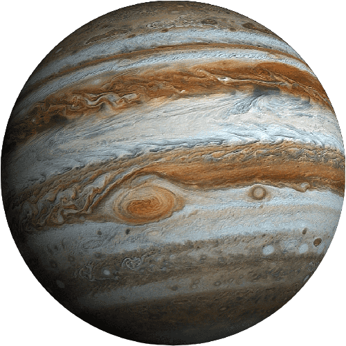

- Júpiter é o quinto planeta a partir do Sol em nosso sistema solar.
- É o maior planeta do sistema solar, com uma massa mais de duas vezes maior do que a soma de todos os outros planetas juntos.
- Júpiter é conhecido como um "gigante gasoso" devido à sua composição predominantemente gasosa, principalmente hidrogênio e hélio.
- O planeta possui um sistema de anéis, embora não sejam tão proeminentes quanto os anéis de Saturno.
- Júpiter é famoso por sua Grande Mancha Vermelha, uma tempestade gigante que existe há pelo menos 350 anos e é visível da Terra.
- Ele possui um grande número de luas, com mais de 70 satélites naturais conhecidos, incluindo os quatro maiores: Io, Europa, Ganimedes e Calisto, conhecidos como as Luas Galileanas.
- Júpiter tem uma influência significativa na dinâmica orbital do sistema solar devido à sua massa e localização.
- A sonda Juno da NASA foi enviada para estudar Júpiter e está coletando informações cruciais sobre a estrutura interna do planeta, sua atmosfera e campos magnéticos.
- A intensa pressão e temperatura nas profundezas de Júpiter podem dar origem a um núcleo rochoso, mas os detalhes ainda não estão totalmente compreendidos.
- Júpiter é frequentemente visível a olho nu no céu noturno e é um dos objetos mais brilhantes do sistema solar, depois do Sol e da Lua.
|

|